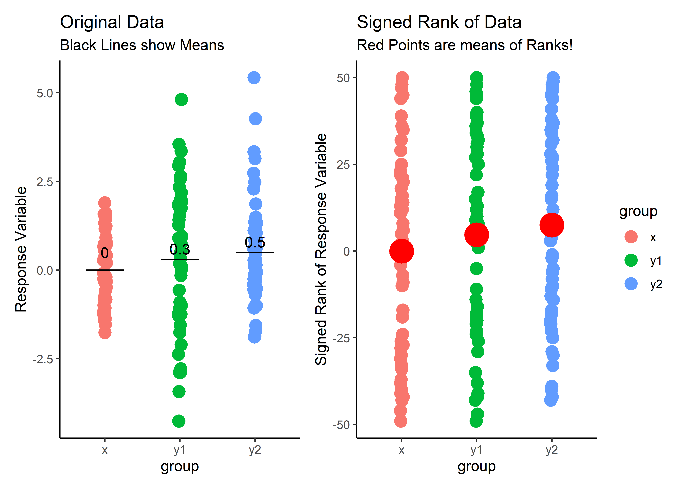
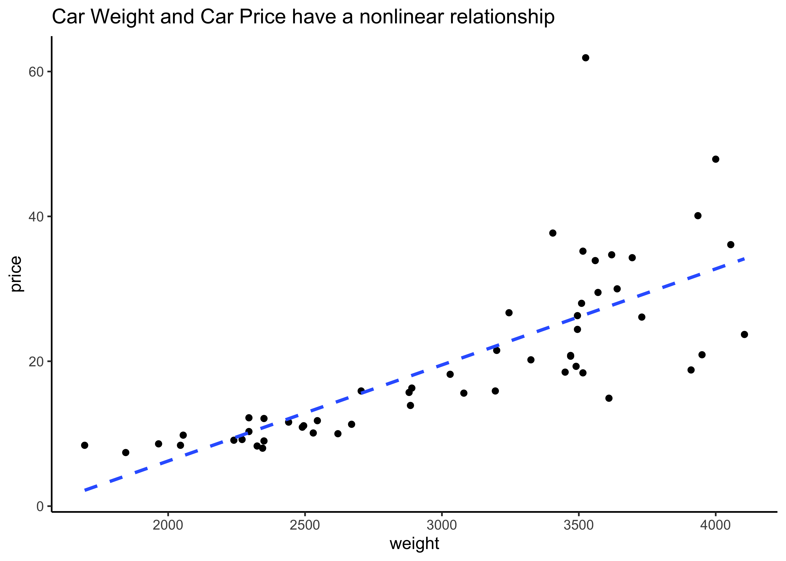

```{r}
#| label: setup
#| fig-align: center
#| fig-dpi: 300
knitr::opts_chunk$set(fig.align = "center", fig.width = 7, fig.height = 5)
options(scipen = 8, digits = 3)
# CRAN Packages
library(tidyverse)
library(broom)
library(mosaic)
library(mosaicCore)
library(mosaicData)
library(openintro) # datasets and methods
library(resampledata3) # datasets
library(statsExpressions) # datasets and methods
library(ggstatsplot) # special stats plots
library(ggExtra)
# Non-CRAN Packages
# remotes::install_github("easystats/easystats")
library(easystats)
ggplot2::theme_set(theme_classic())
```Inference for Correlation
Abstract
Statistical Significance Tests for Correlations between two Variables
Let us recap a few basic definitions:
We have already encountered the variance of a variable:
\[ \begin{align*} var_x &= \frac{\sum_{i=1}^{n}(x_i - \mu_x)^2}{(n-1)}\\ where ~ \mu_x &= mean(x)\\ n &= sample\ size \end{align*} \] The standard deviation is: $$
_x &= \
$$
The covariance of two variables is defined as $$ \[\begin{align*} cov(x,y) &= \frac{\sum_{i = 1}^{n}(x_i - \mu_x)*(y_i - \mu_y)}{n-1}\\ &= \frac{\sum{x_i *y_i}}{n-1} - \frac{\sum{x_i *\mu_y}}{n-1} - \frac{\sum{y_i *\mu_x}}{n-1} + \frac{\sum{\mu_x *\mu_y}}{n-1}\\ &= \frac{\sum{x_i *y_i}}{n-1} - \frac{\sum{\mu_x *\mu_y}}{n-1}\\ \end{align*}\] $$ Hence covariance is the expectation of the product minus the product of the expectations of the two variables.
Covariance uses z-scores!
Note that in both cases we are dealing with z-scores: variable minus its mean, \(x_i - \mu_x\), which we have seen when dealing with the CLT and the Gaussian Distribution.
So, finally, the coefficient of **correlation* between two variables is defined as:
\[ \begin{align*} correlation ~ r &= \frac{cov(x,y)}{\sigma_x * \sigma_y} \\ &= \frac{cov(x,y)}{\sqrt{var_x} * \sqrt{var_y}} \end{align*} \] Thus correlation coefficient is the covariance scaled by the geometric mean of the variances. Correlations define how one variables varies with another. One of the basic Questions we would have of our data is: Does some variable have a significant correlation score with another in some way? Does \(y\) vary with \(x\)? A Correlation Test is designed to answer exactly this question. The block diagram depicts the statistical procedures available to test for the significance of correlation scores between two variables.
```{mermaid}
flowchart TD
A[Inference for Correlation] -->|Check Assumptions| B[Normality: Shapiro-Wilk Test shapiro.test\n Variances: Fisher F-test var.test]
B --> C{OK?}
C -->|Yes, both\n Parametric| D[t.test]
D <-->F[Linear Model\n Method]
C -->|Yes, but not variance\n Parametric| W[t.test with\n Welch Correction]
W<-->F
C -->|No\n Non-Parametric| E[wilcox.test]
E <--> G[Linear Model\n with\n Ranked Data]
C -->|No\n Non-Parametric| P[Bootstrap\n or\n Permutation]
P <--> Q[Linear Model\n with Ranked Data\n and Permutation]
```flowchart TD
A[Inference for Correlation] -->|Check Assumptions| B[Normality: Shapiro-Wilk Test shapiro.test\n Variances: Fisher F-test var.test]
B --> C{OK?}
C -->|Yes, both\n Parametric| D[t.test]
D <-->F[Linear Model\n Method]
C -->|Yes, but not variance\n Parametric| W[t.test with\n Welch Correction]
W<-->F
C -->|No\n Non-Parametric| E[wilcox.test]
E <--> G[Linear Model\n with\n Ranked Data]
C -->|No\n Non-Parametric| P[Bootstrap\n or\n Permutation]
P <--> Q[Linear Model\n with Ranked Data\n and Permutation]
Let us now see how a Correlation Test can be re-formulated as a Linear Model + Hypothesis Test.
The Linear Model
The premise here is that many common statistical tests are special cases of the linear model. A linear model estimates the relationship between dependent variable or “response” variable (\(y\)) and an explanatory variable or “predictor” (\(x\)). It is assumed that the relationship is linear. \(\beta_0\) is the intercept and \(\beta_1\) is the slope of the linear fit, that predicts the value of y based the value of x.
\[ y = \beta_0 + \beta_1 *x \]
Some Toy Data
Most examples in this exposition are based on three “imaginary” samples, \(x, y1, y2\). Each is normally distributed and made up of 50 observations. The means and the sds are, respectively:
```{r data_genr}
rnorm_fixed <- function(N, mu = 0, sd = 1) {
scale(rnorm(N))* sd + mu
}
params <- tibble(mu = c(0, 0.3, 0.5), sd = c(1,2,1.5))
params
``````{r toy_data}
set.seed(40) # for replication
# Data as vectors ( for t.tests etc)
x <- rnorm_fixed(50, mu = 0.0, sd = 1) #explanatory
y1 <- rnorm_fixed(50, mu = 0.3, sd = 2) # dependent #1
y2 <- rnorm_fixed(50, mu = 0.5, sd = 1.5) # dependent #2
# Make a tibble with all variables
mydata_wide <- tibble(x = x, y1 = y1, y2 = y2)
# Long form data
mydata_long <-
mydata_wide %>%
pivot_longer(., cols = c(x,y1,y2),
names_to = "group",
values_to = "value")
# Long form data with only dependent variables
mydata_long_y <-
mydata_wide %>%
select(-x) %>%
pivot_longer(., cols = c(y1,y2),
names_to = "group",
values_to = "value")
```Let us look at our toy data in three ways:
- All three variables:
```{r}
mydata_wide
```- Variables stacked and labelled (Note:
groupis now a Qual variable !!)
```{r}
mydata_long
```- Same as 2, but only for the dependent
yvariables:
```{r}
mydata_long_y
```Tests for Correlation
Correlation r is a measure of strength and direction of linear association between two variables. r is between \([-1,+1]\), with \(0\) implying no association/correlation.
From this definition, the linear model lends itself in a straightforward way as a model to interpret correlation. Intuitively, the slope of the linear model could be related to the correlation between y and x.
Now we look at the numbers.
Pearson Correlation
Model
The model for Pearson Correlation tests is exactly the Linear Model:
\[ \begin{aligned} y = \beta_0 + \beta_1 \times x\\ \\ H_0: Null\ Hypothesis\ => \beta_1 = 0\\\ H_a: Alternate\ Hypothesis\ => \beta_1 \ne 0\\ \end{aligned} \]
```{r Pearson_Correlation}
# Pearson (built-in test)
cor <- cor.test(y1,x,method = "pearson") %>%
broom::tidy() %>% mutate(term = "Pearson Correlation r") %>% select(term, estimate, p.value)
cor
```Using the linear model method we get:
```{r}
# Linear Model
lin <- lm(y1 ~ 1 + x, data = mydata_wide) %>%
broom::tidy() %>% mutate(term = c("beta_0", "beta_1")) %>% select(term, estimate, p.value)
lin
```Why are \(r\) and \(\beta_1\) different, though the p-value is suspiciously the same!?
Did we miss a factor of \(\frac{-0.463}{-0.231} = 2\) somewhere…??
Let us scale the variables to within {-1, +1} : (subtract the mean and divide by sd) and re-do the Linear Model with scaled versions \(x\) and \(y\):
```{r}
# Scaled linear model
lin_scl <- lm(scale(y1) ~ 1 + scale(x), data = mydata_wide) %>%
broom::tidy() %>% mutate(term = c("beta_0", "beta_1")) %>% select(term, estimate, p.value) %>% select(term, estimate, p.value)
lin_scl
```So we conclude:
When both x and y have the same standard deviation, the slope from the linear model and the Pearson correlation are the same. Here, since x has twice the
sdof y, the ratio of slope = -0.4635533 to r = -0.2317767 is 0.5.There is this relationship between the slope in the linear model and Pearson correlation:
\[ Slope\ \beta_1 = \frac{sd_y}{sd_x} * r \]
The slope is usually much more interpretable and informative than the correlation coefficient.
- Hence a linear model using
scale()for both variables will show slope = r.
Slope_Scaled: -0.2317767 = Correlation: -0.2317767
- Finally, the p-value for Pearson Correlation and that for the slope in the linear model is the same (\(0.1053\)). Which means we cannot reject the NULL hypothesis of “no relationship”.
Example
TBD
Spearman Correlation
Model
In some cases the LINE assumptions may not hold.
Nonlinear relationships, non-normally distributed data ( with large outliers ) and working with ordinal rather than continuous data: these situations necessitate the use of Spearman’s ranked correlation scores. (Ranked, not sign-ranked.).
See the example below: We choose to look at the gpa_study_hours dataset. It has two numeric columns gpa and study_hours:
```{r gpa_study_hours}
glimpse(gpa_study_hours)
```Rows: 193
Columns: 2
$ gpa <dbl> 4.000, 3.800, 3.930, 3.400, 3.200, 3.520, 3.680, 3.400, 3.…
$ study_hours <dbl> 10, 25, 45, 10, 4, 10, 24, 40, 10, 10, 30, 7, 15, 60, 10, …We can plot this:
```{r Pearson_example_3}
ggplot(gpa_study_hours, aes(x = study_hours, y = gpa)) + geom_point() + geom_smooth() + theme_minimal()
# ggstatsplot::ggscatterstats(data = gpa_study_hours,
# x = study_hours,
# y = gpa,
# marginal = TRUE,
# title = "GPA vs Study Hours")
```
Hmm…not normally distributed, and there is a sort of increasing relationship, however is it linear? And there is some evidence of heteroscedasticity, so the LINE assumptions are clearly in violation. Pearson correlation would not be the best idea here.
Let us quickly try it anyway, using a Linear Model for the scaled gpa and study_hours variables, from where we get:
```{r Pearson_example_1}
# Pearson Correlation as Linear Model
model_gpa <-
lm(scale(gpa) ~ 1 + scale(study_hours), data = gpa_study_hours)
model_gpa %>%
broom::tidy() %>%
mutate(term = c("beta_0", "beta_1")) %>%
cbind(confint(model_gpa) %>% as_tibble()) %>%
select(term, estimate, p.value, `2.5 %`, `97.5 %`)
```The correlation estimate is \(0.133\); the p-value is \(0.065\) (and the confidence interval includes \(0\)).
Hence we fail to reject the NULL hypothesis that study_hours and gpa have no relationship. But can this be right?
Should we use another test, that does not need the LINE assumptions?
“Signed Rank” Values
Most statistical tests use the actual values of the data variables. However, in some non-parametric statistical tests, the data are used in rank-transformed sense/order. (In some cases the signed-rank of the data values is used instead of the data itself.)
Signed Rank is calculated as follows:
Take the absolute value of each observation in a sample
Place the ranks in order of (absolute magnitude). The smallest number has rank = 1 and so on. This gives is ranked data.
Give each of the ranks the sign of the original observation ( + or -). This gives us signed ranked data.
```{r signed_rank_function}
signed_rank <- function(x) {sign(x) * rank(abs(x))}
```Plotting Original and Signed Rank Data
Let us see how this might work by comparing data and its signed-rank version…A quick set of plots:
```{r data_plots}
p1 <- ggplot(mydata_long,aes(x = group, y = value)) +
geom_jitter(width = 0.02, height = 0,aes(colour = group), size = 4) +
geom_segment(data = mydata_wide, aes(y = 0, yend = 0,
x = .75,
xend = 1.25 )) +
geom_text(aes(x = 1, y = 0.5, label = "0")) +
geom_segment(data = mydata_wide, aes(y = 0.3, yend = 0.3,
x = 1.75 ,
xend = 2.25 )) +
geom_text(aes(x = 2, y = 0.6, label = "0.3")) +
geom_segment(data = mydata_wide, aes(y = 0.5, yend = 0.5,
x = 2.75,
xend = 3.25 )) +
geom_text(aes(x = 3, y = 0.8, label = "0.5")) +
labs(title = "Original Data", subtitle = "Black Lines show Means") +
ylab("Response Variable")
p2 <- mydata_long %>%
group_by(group) %>%
mutate( s_value = signed_rank(value)) %>%
ggplot(., aes(x = group, y = s_value)) +
geom_jitter(width = 0.02, height = 0,aes(colour = group), size = 4) +
stat_summary(fun = "mean", geom = "point", colour = "red",
size = 8) +
labs(title = "Signed Rank of Data", subtitle = "Red Points are means of Ranks!") +
ylab("Signed Rank of Response Variable")
patchwork::wrap_plots(p1,p2, nrow = 1, guides = "collect")
```
So the means of the ranks three separate variables seem to be in the same order as the means of the data variables themselves.
How about associations between data? Do ranks reflect well what the data might?
```{r Spearman_Plot}
# Plot the data
p1 <- ggplot(mydata_wide, aes(x, y1)) +
geom_point() +
geom_smooth(method = "lm") +
ggtitle(" Pearson Correlation\n and Linear Models")
# Plot ranked data
p2 <- mydata_wide %>%
mutate(x_rank = rank(x),
y_rank = rank(y1)) %>%
ggplot(.,aes(x_rank, y_rank)) +
geom_point(shape = 15, size = 2) +
geom_smooth(method = "lm") +
ggtitle(" Spearman Ranked Correlation\n and Linear Models")
patchwork::wrap_plots(p1,p2, nrow = 1, guides = "collect")
```
The slopes are almost identical, \(0.25\) for both original data and ranked data for \(y1\sim x\). So maybe ranked and even sign_ranked data could work, and if it can work despite LINE assumptions not being satisfied, that would be nice!
How does Sign-Rank data work?
TBD: need to add some explanation here.
Spearman correlation = Pearson correlation using the rank of the data observations. Let’s check how this holds for a our x and y1 data:
So the Linear Model for the Ranked Data would be:
\[ \begin{aligned} y = \beta_0 + \beta_1 \times rank(x)\\ \\ H_0: Null\ Hypothesis\ => \beta_1 = 0\\\ H_a: Alternate\ Hypothesis\ => \beta_1 \ne 0\\ \end{aligned} \]
Code
```{r Spearman_Correlation}
# Spearman
cor1 <- cor.test(x,y1, method = "spearman") %>%
broom::tidy() %>% mutate(term = "Spearman Correlation ") %>% select(term, estimate, p.value)
cor1
``````{r}
# Pearson using ranks
cor2 <- cor.test(rank(y1), rank(x), method = "pearson") %>%
broom::tidy() %>% select(estimate, p.value)
cor2
``````{r}
# Linear Models using rank
cor3 <- lm(rank(y1) ~ 1 + rank(x),data = mydata_wide) %>%
broom::tidy() %>% select(estimate, p.value)
cor3
```Notes:
When ranks are used, the slope of the linear model (\(\beta_1\)) has the same value as the Spearman correlation coefficient ( \(\rho\) ).
Note that the slope from the linear model now has an intuitive interpretation: the number of ranks y changes for each change in rank of x. ( Ranks are “independent” of
sd)
Example
We examine the cars93 data, where the numeric variables of interest are weight and price.
```{r Spearman_example_1}
cars93 %>%
ggplot(aes(weight, price)) +
geom_point() + geom_smooth(method = "lm", se = FALSE, lty = 2) +
labs(title = "Car Weight and Car Price have a nonlinear relationship")
```
Let us try a Spearman Correlation score for these variables, since the data are not linearly related and the variance of price also is not constant over weight
```{r Spearman_example_2}
cor.test(cars93$price, cars93$weight, method = "spearman") %>% broom::tidy()
# Using linear Model
lm(rank(price) ~ rank(weight), data = cars93) %>% summary()
# Stats Plot
ggstatsplot::ggscatterstats(data = cars93, x = weight,
y = price,
type = "nonparametric",
title = "Cars93: Weight vs Price",
subtitle = "Spearman Correlation")
```
Call:
lm(formula = rank(price) ~ rank(weight), data = cars93)
Residuals:
Min 1Q Median 3Q Max
-20.0676 -3.0135 0.7815 3.6926 20.4099
Coefficients:
Estimate Std. Error t value Pr(>|t|)
(Intercept) 3.22074 2.05894 1.564 0.124
rank(weight) 0.88288 0.06514 13.554 <2e-16 ***
---
Signif. codes: 0 '***' 0.001 '**' 0.01 '*' 0.05 '.' 0.1 ' ' 1
Residual standard error: 7.46 on 52 degrees of freedom
Multiple R-squared: 0.7794, Adjusted R-squared: 0.7751
F-statistic: 183.7 on 1 and 52 DF, p-value: < 2.2e-16
We see that using ranks of the price variable, we obtain a Spearman’s \(\rho = 0.882\) with a p-value that is very small. Hence we are able to reject the NULL hypothesis and state that there is a relationship between these two variables. The linear relationship is evaluated as a correlation of 0.882.
```{r}
# Other ways using other packages
mosaic::cor_test(gpa ~ study_hours, data = gpa_study_hours) %>% broom:: tidy() %>% select(estimate, p.value, conf.low, conf.high)
``````{r}
statsExpressions::corr_test(data = gpa_study_hours,
x = study_hours,
y = gpa)
```
Common statistical tests are linear models (or: how to teach stats) by Jonas Kristoffer Lindeløv
CheatSheet
Common statistical tests are linear models: a work through by Steve Doogue
Jeffrey Walker “Elements of Statistical Modeling for Experimental Biology”
Diez, David M & Barr, Christopher D & Çetinkaya-Rundel, Mine: OpenIntro Statistics
Modern Statistics with R: From wrangling and exploring data to inference and predictive modelling by Måns Thulin
Jeffrey Walker “A linear-model-can-be-fit-to-data-with-continuous-discrete-or-categorical-x-variables”
Attali, Dean, and Christopher Baker. 2023. ggExtra: Add Marginal Histograms to “ggplot2,” and More “ggplot2” Enhancements. https://CRAN.R-project.org/package=ggExtra.
Çetinkaya-Rundel, Mine, David Diez, Andrew Bray, Albert Y. Kim, Ben Baumer, Chester Ismay, Nick Paterno, and Christopher Barr. 2022. openintro: Data Sets and Supplemental Functions from “OpenIntro” Textbooks and Labs. https://CRAN.R-project.org/package=openintro.
Chihara, Laura, and Tim Hesterberg. 2022. Resampledata3: Data Sets for “Mathematical Statistics with Resampling and R” (3rd Ed). https://CRAN.R-project.org/package=resampledata3.
Lüdecke, Daniel, Mattan S. Ben-Shachar, Indrajeet Patil, Brenton M. Wiernik, Etienne Bacher, Rémi Thériault, and Dominique Makowski. 2022. “easystats: Framework for Easy Statistical Modeling, Visualization, and Reporting.” CRAN. https://easystats.github.io/easystats/.
Patil, Indrajeet. 2021a. “statsExpressions: R Package for Tidy Dataframes and Expressions with Statistical Details.” Journal of Open Source Software 6 (61): 3236. https://doi.org/10.21105/joss.03236.
———. 2021b. “Visualizations with statistical details: The ‘ggstatsplot’ approach.” Journal of Open Source Software 6 (61): 3167. https://doi.org/10.21105/joss.03167.
Citation
BibTeX citation:
@online{v.2022,
author = {V., Arvind},
title = {Inference for {Correlation}},
date = {2022-11-25},
url = {https://av-quarto.netlify.app/content/courses/Analytics/Inference/Modules/150-Correlation/single_corr.html},
langid = {en},
abstract = {Statistical Significance Tests for Correlations between
two Variables}
}
For attribution, please cite this work as:
V., Arvind. 2022. “Inference for Correlation.” November 25,
2022. https://av-quarto.netlify.app/content/courses/Analytics/Inference/Modules/150-Correlation/single_corr.html.